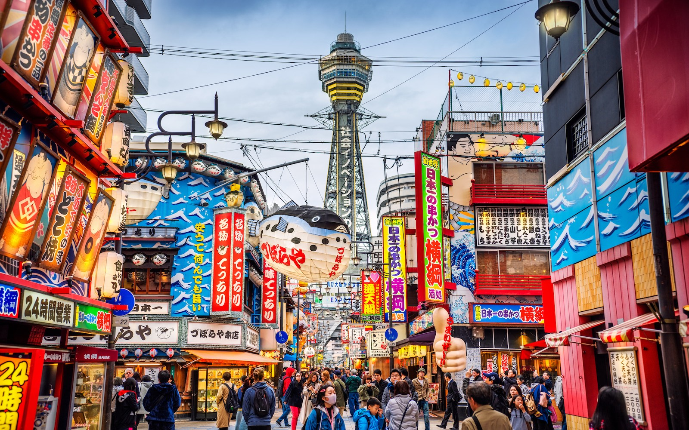
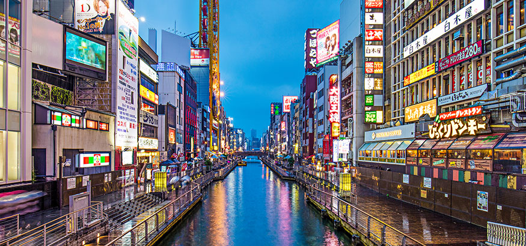
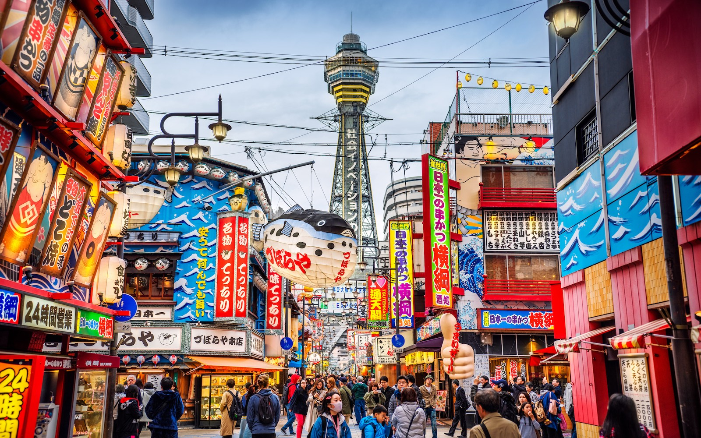
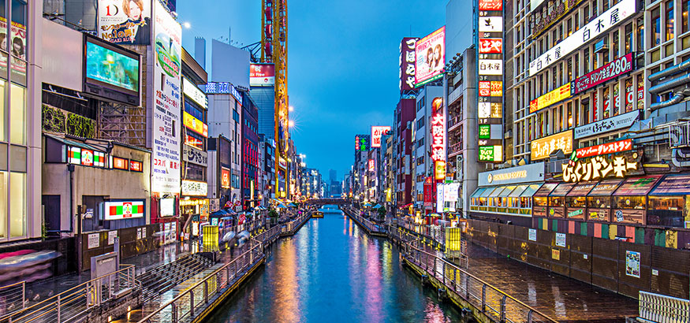

.svg)
OSAKA
 



The center of western Japan and the home of Japanese comedy, Osaka Prefecture (大阪府, Ōsaka-fu) is lively at all times, as the business district in Umeda, the shopping area of Shinsaibashi, and the neon-lit nightlife district of Dotonbori reflect the upbeat and friendly nature of the local people. But if you’re tired of the urbanity, Osaka Castle and the Expo Commemoration Park (which contains the National Museum of Ethnology and the iconic Tower of the Sun) ensure that you won’t run out of things to do. And that’s without even mentioning Universal Studios Japan. Walking around the streets of Osaka can be a gastronomical experience, with many food stalls selling takoyaki, okonomiyaki, and other delicious fast foods and snacks. And if you have the luxury to splurge, have dinner at Kitcho, one of the most high class Japanese restaurants. The center of western Japan and the home of Japanese comedy, Osaka Prefecture (大阪府, Ōsaka-fu) is lively at all times, as the business district in Umeda, the shopping area of Shinsaibashi, and the neon-lit nightlife district of Dotonbori reflect the upbeat and friendly nature of the local people. But if you’re tired of the urbanity, Osaka Castle and the Expo Commemoration Park (which contains the National Museum of Ethnology and the iconic Tower of the Sun) ensure that you won’t run out of things to do. And that’s without even mentioning Universal Studios Japan. Walking around the streets of Osaka can be a gastronomical experience, with many food stalls selling takoyaki, okonomiyaki, and other delicious fast foods and snacks. And if you have the luxury to splurge, have dinner at Kitcho, one of the most high class Japanese restaurants. The center of western Japan and the home of Japanese comedy, Osaka Prefecture (大阪府, Ōsaka-fu) is lively at all times, as the business district in Umeda, the shopping area of Shinsaibashi, and the neon-lit nightlife district of Dotonbori reflect the upbeat and friendly nature of the local people. But if you’re tired of the urbanity, Osaka Castle and the Expo Commemoration Park (which contains the National Museum of Ethnology and the iconic Tower of the Sun) ensure that you won’t run out of things to do. And that’s without even mentioning Universal Studios Japan. Walking around the streets of Osaka can be a gastronomical experience, with many food stalls selling takoyaki, okonomiyaki, and other delicious fast foods and snacks. And if you have the luxury to splurge, have dinner at Kitcho, one of the most high class Japanese restaurants. The center of western Japan and the home of Japanese comedy, Osaka Prefecture (大阪府, Ōsaka-fu) is lively at all times, as the business district in Umeda, the shopping area of Shinsaibashi, and the neon-lit nightlife district of Dotonbori reflect the upbeat and friendly nature of the local people. But if you’re tired of the urbanity, Osaka Castle and the Expo Commemoration Park (which contains the National Museum of Ethnology and the iconic Tower of the Sun) ensure that you won’t run out of things to do. And that’s without even mentioning Universal Studios Japan. Walking around the streets of Osaka can be a gastronomical experience, with many food stalls selling takoyaki, okonomiyaki, and other delicious fast foods and snacks. And if you have the luxury to splurge, have dinner at Kitcho, one of the most high class Japanese restaurants.